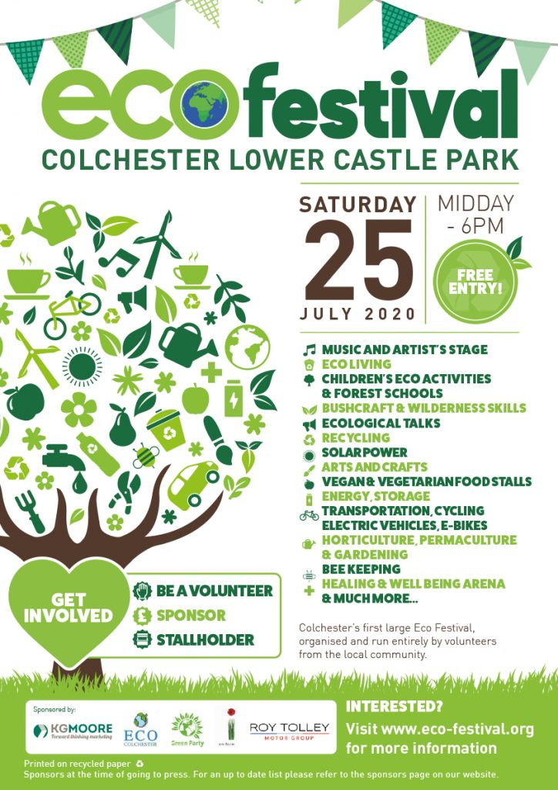
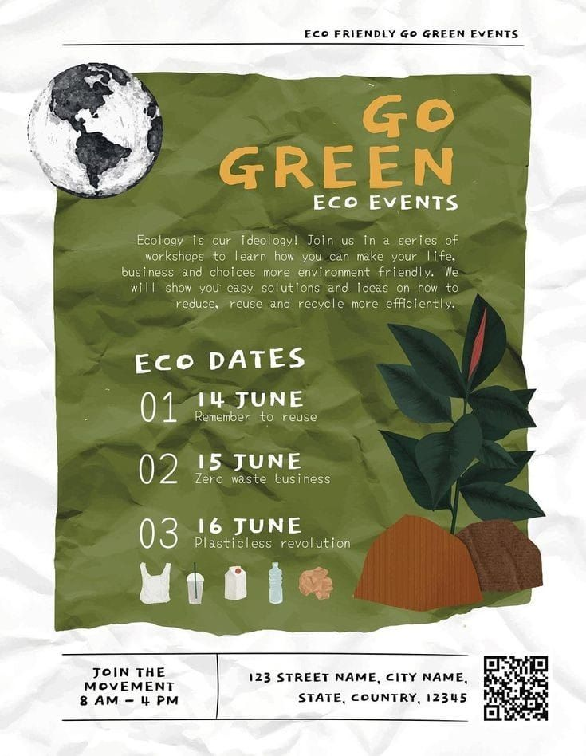

Encontre pontos de coleta, horários de coleta seletiva, indicadores ambientais e muito mais!
Jacarezinho


Faça parte do EcoLaço e contribua com informações oficiais sobre coleta seletiva, pontos de entrega voluntária e ações ambientais no Norte Pioneiro do Paraná.
Quer tirar dúvidas, enviar sugestões, apoiar o projeto ou acompanhar nossas ações ambientais?